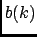
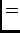

Next: About this document ...
Up: nMOLDYN_for_HTML
Previous: Bibliography
Contents
The FCA algorithm
Most of the quantities which can be extracted from MD simulations are time correlation functions.
Correlation functions of discrete time series can be efficiently calculated by using the Fast Fourier
Transform (FFT) [74]. The FCA allows the number of multiplications (complexity) to be reduced from to
. In
nMOLDYN all time correlation functions are computed using the FCA method which will be outlined in the
following. We will also briefly comment on spectral smoothing of Fourier transformed correlation functions.
We consider two time series
 |
|
|
(A.1) |
of length
which are to be correlated. In the
following the shorthands and  will be used. The discrete
correlation function of and is defined as
The prefactors in front of the sums ensure the proper normalization of
the individual channels,
. The asterisk
denotes a complex conjugate. According to (A.2),
has data points and obeys the symmetry relation
In case that and are identical, the corresponding
correlation function is called an autocorrelation
function. We define now the extended, periodic time series
 |
 |
|
(A.4) |
|
|
|
(A.5) |
which have the period  ,
,
The discrete, cyclic correlation of and  is defined as
is defined as
It is easy to see that
Using the correlation theorem of discrete periodic functions
[74], can be written as
where
and
are the discrete Fourier transforms of
and , respectively:
If the Fourier transforms of the signals and as well as
the inverse transform in (A.9) are computed by FFT,
can be computed by
instead of
multiplications. It is sometimes said that the FFT
method induces spurious correlations. We emphasize that this is only
the case if the time series and are not properly
extended, as indicated in Eqs. (A.4) and (A.5). The FFT
method and the direct scheme (A.2) give, apart from
round-off errors, identical results.
In many cases not only the computation of a correlation function is
required, but also the computation of its Fourier spectrum. In
principle one could use the product
which is already available as an intermediate step in the computation
of according to (A.9). This would, however, not
be a good estimate for the spectrum of [75]. In
nMOLDYN all spectra are smoothed by applying a window in the time
domain [75]:
The time step  in front of the sum yields the proper
normalization of the spectrum. In nMOLDYN a Gaussian window
[76] is used:
in front of the sum yields the proper
normalization of the spectrum. In nMOLDYN a Gaussian window
[76] is used:
Its widths in the time and frequency domain are
 and
, respectively. We recall that
is the length of the simulation.
corresponds to the width of the resolution function of the Fourier spectrum.
and
, respectively. We recall that
is the length of the simulation.
corresponds to the width of the resolution function of the Fourier spectrum.
Next: About this document ...
Up: nMOLDYN_for_HTML
Previous: Bibliography
Contents
pellegrini eric
2009-10-06